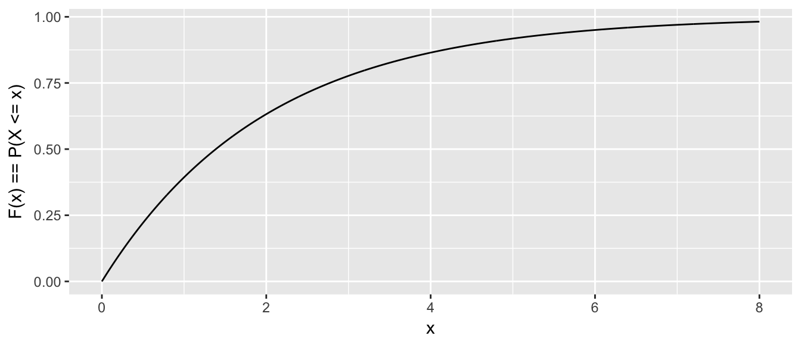
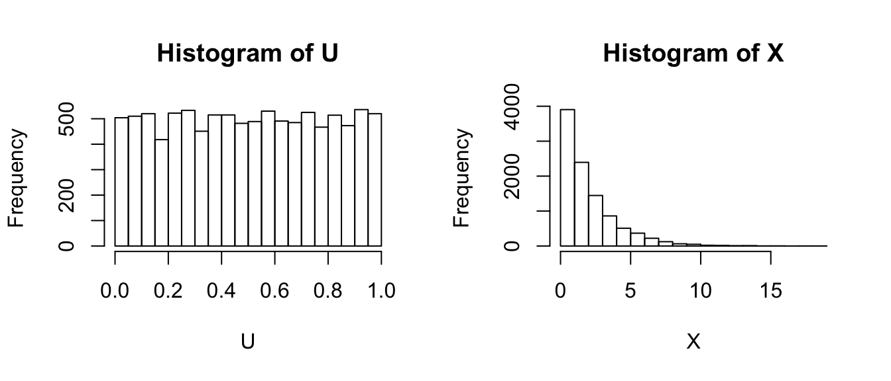
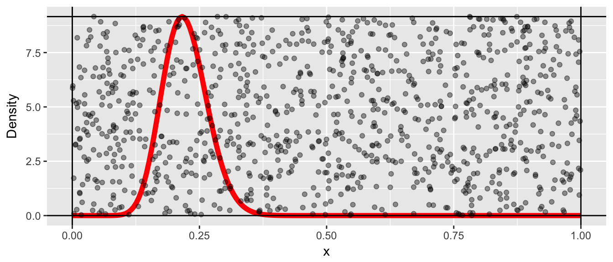
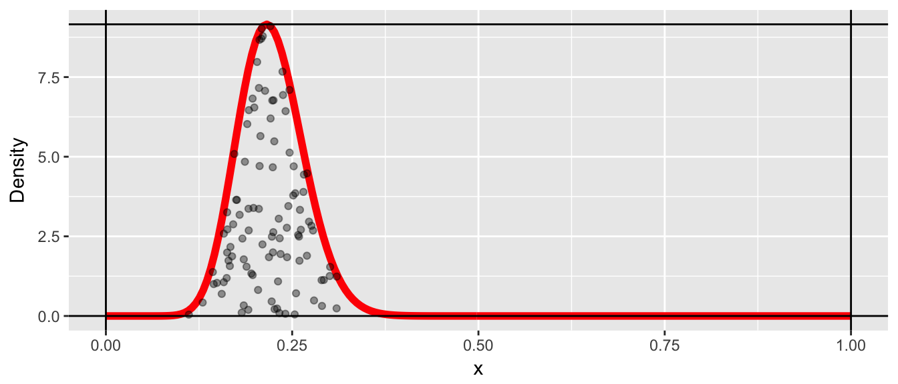
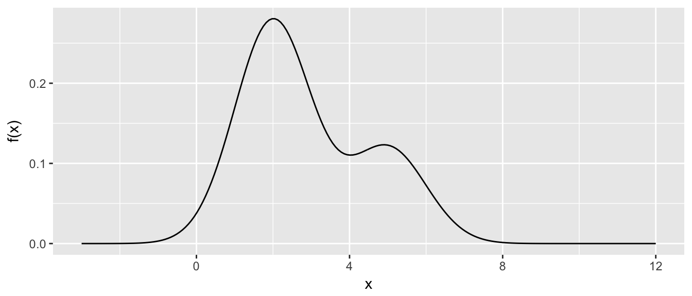
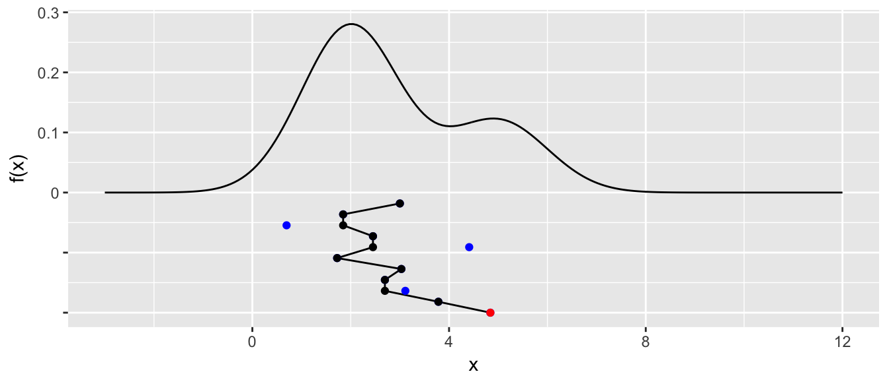
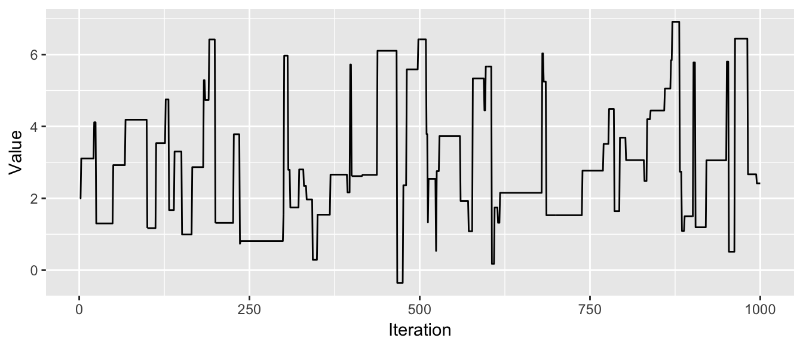
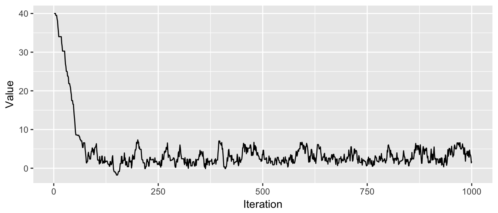
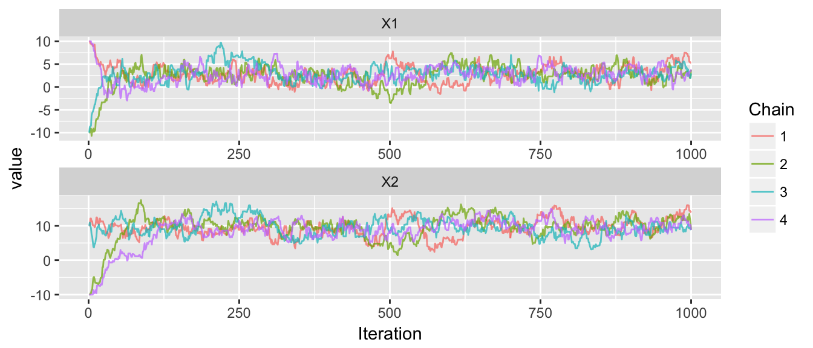
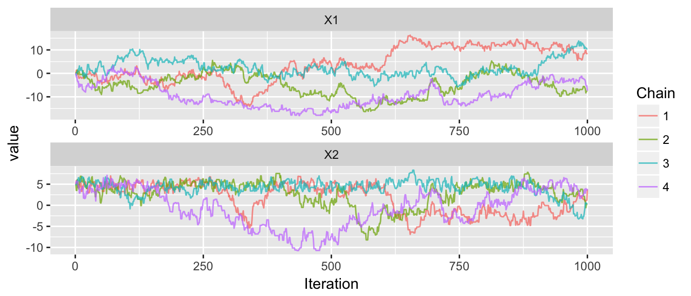

Chapter 2 Markov Chain Monte Carlo
library(ggplot2)
library(dplyr)
library(devtools)
install_github('dereksonderegger/STA578') # Some routines I created for this
library(STA578)Modern statistical methods often rely on being able to produce random numbers from an arbitrary distribution. In this chapter we will explore how this is done.
2.1 Generating \(U\sim Uniform(0,1)\)
It is extremely difficult to generate actual random numbers but it is possible to generate pseudo-random numbers. That is, we’ll generate a sequence of digits, say 1,000,000,000 long such that any sub-sequence looks like we are just drawing digits [0-9] randomly. Then given this sequence, we chose a starting point (perhaps something based off the clock time of the computer we are using). From the starting point, we generate \(U\sim Uniform(0,1)\) numbers by using just reading off successive digits.
In practice there are many details of the above algorithm that are quite tricky, but we will ignore those issues and assume we have some method for producing random samples from \(Uniform\left(0,1\right)\) distribution.
2.2 Inverse CDF Method
Suppose that we wish to generate a random sample from a given distribution, say, \(X\sim Exp\left(\lambda=1/2\right)\). This distribution is pretty well understood and it is easy to calculate various probabilities. The density function is \(f\left(x\right)=\lambda\cdot e^{-x\lambda}\) and we can easily calculate probabilities such as \[\begin{aligned} P\left(X\le3\right) &= \int_{0}^{3}\lambda e^{-x\lambda}\,dx \\ &= e^{-0\lambda}-e^{-3\lambda} \\ &= 1-e^{-3\lambda} \\ &= 0.7769 \end{aligned}\]
Given this result, it is possible to figure out \(P\left(X\le x\right)\) for any value of \(x\). (Here the capital \(X\) represents the random variable and the lower case \(x\) represents a particular value that this variable can take on.) Now thinking of these probabilities as a function, we define the cumulative distribution function (CDF) as
\[F\left(x\right)=P\left(X\le x\right)=1-e^{-x\lambda}\]
If we make a graph of this function we have

Given this CDF, we if we can generate a \(U\sim Uniform(0,1)\), we can just use the CDF function in reverse (i.e the inverse CDF) and transform the U to be an \(X\sim Exp\left(\lambda\right)\) random variable. In R, most of the common distributions have a function that calculates the inverse CDF, in the exponential distribution it is qexp(x, rate) and for the normal it would be qnorm(), etc.
U <- runif(10000, min=0, max=1) # 10,000 Uniform(0,1) values
X <- qexp(U, rate=1/2)
par(mfrow=c(1,2))
hist(U)
hist(X)
This is the type of trick that Statistics students might learn in a probability course, but this is hardly interesting from a computationally intensive perspective, so if you didn’t follow the calculus, don’t fret.
2.3 Accept/Reject Algorithm
We now consider a case where we don’t know the CDF (or it is really hard to work with). Let the random variable \(X\) which can take on values from \(0\le X\le 1\) and has probability density function \(f\left(x\right)\). Furthermore, suppose that we know what the maximum value of the density function is, which we’ll denote \(M=\max\,f\left(x\right)\).
x <- seq(0,1, length=200)
y <- dbeta(x, 20, 70)
M <- max(y)
data.line <- data.frame(x=x, y=y)
p <- ggplot(data.line, aes(x=x, y=y)) + geom_line(color='red', size=2) +
labs(y='Density') +
geom_vline(xintercept=c(0,1)) +
geom_hline(yintercept=c(0, max(y)))
p
It is trivial to generate points that are uniformly distributed in the rectangle by randomly selecting points \(\left(x_{i},y_{i}\right)\) by letting \(x_{i}\) be randomly sampled from a \(Uniform(0,1)\) distribution and \(y_{i}\) be sampled from a \(Uniform(0,M)\) distribution. Below we sample a thousand points.
N <- 1000
x <- runif(N, 0,1)
y <- runif(N, 0, M)
proposed <- data.frame(x=x, y=y)
p + geom_point(data=proposed, alpha=.4)
Since we want to select a random sample from the curved distribution (and not uniformly from the box), I will reject pairs \(\left(x_{i},y_{i}\right)\) if \(y_{i}\ge f\left(x_{i}\right)\). This leaves us with the following points.
accepted <- proposed %>%
filter( y <= dbeta(x, 20,70) )
p + geom_point(data=accepted, alpha=.4)
We can now regard those \(x_{i}\) values as a random sample from the distribution \(f\left(x\right)\) and the histogram of those values is a good approximation to the distribution \(f\left(x\right)\).
ggplot(data=accepted, aes(x=x)) +
geom_histogram(aes(y=..density..), bins=20) +
geom_line(data=data.line, aes(x=x,y=y), color='red')
Clearly this is a fairly inefficient way to generate points from a distribution, but it contains a key concept \[x_{i}\textrm{ is accepted if }u_{i}<\frac{f\left(x_{i}\right)}{M}\] where \(y_{i}=u_{i}\cdot M\) is the height of the point and \(u_i\) is a random observation from the \(Uniform(0,1)\) distribution.
Pros/Cons
• Pro: This technique is very simple to program.
• Cons: Need to know the maximum height of the distribution.
• Cons: This can be a very inefficient algorithm as most of the proposed values are thrown away.
2.4 MCMC algorithm
Suppose that we have one observation, \(x_{1}\), from the distribution \(f\left(x\right)\) and we wish to create a whole sequence of observations \(x_{2},\dots,x_{n}\) that are also from that distribution. The following algorithm will generate \(x_{i+1}\) given the value of \(x_{i}\).
Generate a proposed \(x_{i+1}^{*}\) from a distribution that is symmetric about \(x_{i}\). For example \(x_{i+1}^{*}\sim N\left(x_{i},\sigma=1\right)\).
Generate a random variable \(u_{i+1}\) from a \(Uniform(0,1)\) distribution.
If \[u_{i+1}\le\frac{f\left(x_{i+1}^{*}\right)}{f\left(x_{i}\right)}\] then we accept \(x_{i+1}^{*}\) and define \(x_{i+1}=x_{i+1}^{*}\), otherwise reject \(x_{i+1}^{*}\) and define \(x_{i+1}=x_{i}\)
The idea of this algorithm is that if we propose an \(x_{i+1}^{*}\) value that has a higher density than \(x_{i}\), we should always accept that value as the next observation in our chain. If we propose a value that has lower density, then we should sometimes accept it, and the correct probability of accepting it is the ratio of the probability density function. If we propose a value that has a much lower density, then we should rarely accept it, but if we propose a value that is has only a slightly lower density, then we should usually accept it.
There is theory that show that a large sample drawn as described will have the desired proportions that match the distribution of interest. However, the question of “how large is large enough” is a very difficult question.
Actually we only need to know the distribution up to a scaling constant. Because we’ll look at the ratio \(f\left(x^{*}\right)/f\left(x\right)\) any constants that don’t depend on x will cancel. For Bayesians, this is a crucial point.
2.4.1 Mixture of normals
We consider the problem of generating a random sample from a mixture of normal distributions. We first define our distribution \(f\left(x\right)\)
df <- function(x){
return(.7*dnorm(x, mean=2, sd=1) + .3*dnorm(x, mean=5, sd=1))
} x <- seq(-3,12, length=200)
density.data <- data.frame(x=x, y=df(x))
density <- ggplot( density.data, aes(x=x, y=y)) +
geom_line() +
labs(y='f(x)', x='x')
density
It is worth noting at this point that the variance of this distribution is \(\sigma = 2.89\).
mu <- integrate( function(x){ x * df(x) }, lower=-Inf, upper=Inf)
mu <- mu$value
sigma2 <- integrate( function(x){ (x-mu)^2 * df(x) }, lower=-Inf, upper=Inf)
c( mu=mu, sigma2=sigma2$value )## mu sigma2
## 2.90 2.89Next we define our proposal distribution, which will be \(Uniform\left(x_{i}-2,\,x_{i}+2\right)\).
rproposal <- function(x.i){
out <- x.i + runif(1, -2, 2) # x.i + 1 observation from Uniform(-2, 2)
return(out)
} Starting from \(x_{1}=3\), we will randomly propose a new value.
x <- 3; # starting value for the chain
x.star <- 3 # initialize the vector of proposal values
x.star[2] <- rproposal( x[1] )
x.star[2]## [1] 1.846296if( df(x.star[2]) / df(x[1]) > runif(1) ){
x[2] <- x.star[2]
}else{
x[2] <- x[1]
}We proposed a value of \(x=1.846\) and because \(f\left(1.846\right)\ge f\left(3\right)\) then this proposed value must be accepted (because the ratio \(f\left(x_{2}^{*}\right)/f\left(x_{1}\right)\ge1\) and is therefore greater than \(u_{2}\in\left[0,1\right]\). We plot the chain below the density plot to help visualize the process.
STA578::plot_chain(density, x, x.star)
Next we will repeat the process for ten iterations. If a proposed point is rejected, it will be shown in blue and not connected to the chain. The connected line will be called a traceplot and is usually seen rotated counter-clockwise by 90 degrees.
for( i in 2:10 ){
x.star[i+1] <- rproposal( x[i] )
if( df(x.star[i+1]) / df(x[i]) > runif(1) ){
x[i+1] <- x.star[i+1]
}else{
x[i+1] <- x[i]
}
} STA578::plot_chain(density, x, x.star)
We see that the third step in the chain, we proposed a value near \(x=1\) and it was rejected. Similarly steps \(5\) and \(9\) were rejected because \(f\left(x_{i+1}^{*}\right)\) of the proposed value was very small compared to \(f\left(x_{i}\right)\) and thus the proposed value was unlikely to be accepted.
At this point, we should make one final adjustment to the algorithm. In general, it is not necessary for the proposal distribution to by symmetric about \(x_{i}\). Let \(g\left(x_{i+1}^{*}|x_{i}\right)\) be the density function of the proposal distribution, then the appropriate accept/reject criteria is modified to be
• If \[u_{i+1}\le\frac{f\left(x_{i+1}^{*}\right)}{f\left(x_{i}\right)}\frac{g\left(x_{i}|x_{i+1}^{*}\right)}{g\left(x_{i+1}^{*}|x_{i}\right)}\] then we accept \(x_{i+1}^{*}\) and define \(x_{i+1}=x_{i+1}^{*}\), otherwise reject \(x_{i+1}^{*}\) and define \(x_{i+1}=x_{i}\)
Notice that if \(g\left(\right)\) is symmetric about \(x_{i}\) then \(g\left(x_{i}|x_{i+1}^{*}\right)=g\left(x_{i+1}^{*}|x_{i}\right)\) and the second fraction is simply 1.
It will be convenient to hide the looping part of the MCMC, so we’ll create a simple function to handle the details. We’ll also make a program to make a traceplot of the chain.
?MCMC
# You can look at the source code of many functions by just typing the name.
# This trick unfortunately doesn't work with functions that are just wrappers
# to C or C++ programs or are hidden due to Object Oriented inheritance.
MCMC## function (df, start, rprop, dprop = NULL, N = 1000)
## {
## if (is.null(dprop)) {
## dprop <- function(to, from) {
## 1
## }
## }
## chain <- rep(NA, N)
## chain[1] <- start
## for (i in 1:(N - 1)) {
## x.star <- rprop(chain[i])
## r1 <- df(x.star)/df(chain[i])
## r2 <- dprop(chain[i], x.star)/dprop(x.star, chain[i])
## if (r1 * r2 > runif(1)) {
## chain[i + 1] <- x.star
## }
## else {
## chain[i + 1] <- chain[i]
## }
## }
## return(chain)
## }
## <environment: namespace:STA578>We should let this process run for a long time, and we will just look the traceplot.
chain <- STA578::MCMC(df, 2, rproposal, N=1000) # do this new!
STA578::trace_plot(chain)
This seems like it is working as the chain has occasional excursions out tho the tails of the distribution, but is mostly concentrated in the peaks of the distribution. We’ll run it longer and then examine a histogram of the resulting chain.
chain2 <- MCMC(df, chain[1000], rproposal, N=10000)
long.chain <- c(chain, chain2)
ggplot( data.frame(x=long.chain), aes(x=x, y=..density..)) +
geom_histogram(bins=40)
All in all this looks quite good.
2.4.2 Common problems
Proposal Distribution
The proposal distribution plays a critical role in how well the MCMC simulation explores the distribution of interest. If the variance of the proposal distribution is too small, then the number of steps to required to move a significant distance across the distribution becomes large. If the variance is too large, then a large percentage of the proposed values will be far from the center of the distribution and will be rejected.
First, we create a proposal distribution with a small variance and examine its behavior.
p.small <- function(x){
return( x + runif(1, -.1, +.1) )
}
chain <- MCMC(df, 2, p.small, N=1000)
trace_plot(chain)
In these 1000 steps, the chain has not gone smaller than 1 or larger than 3.5 and hasn’t explored the second “hump” of the distribution yet. If the valley between the two humps was deeper, it is possible that the chain would never manage to cross the valley and find the second hump.
The effect of too large of variance is also troublesome.
p.large <- function(x){
return( x + runif(1, -30, +30) )
}
chain <- MCMC(df, 2, p.large, N=1000)
trace_plot(chain)
This chain is not good because it stays in place for too long before finding another suitable value. It will take a very long time to suitably explore the distribution.
Given these two examples, it is clear that the choice of the variance parameter is a critical choice. A commonly used rule of thumb that balances these two issues is that the variance parameter should be chosen such that approximately \(40-60\%\) of the proposed values are accepted. To go about finding that variance parameter, we will have a initialization period where we tweak the variance parameter until we are satisfied with the acceptance rate.
Burn-in
Another problem with the MCMC algorithm is that it requires that we already have a sample drawn from the distribution in question. This is clearly not possible, so what we do is use a random start and hope that the chain eventually finds the center of the distribution.
chain <- MCMC(df, 40, rproposal, N=1000) # start at x = 40
trace_plot(chain)
Given this example, it seems reasonable to start the chain and then disregard the initial “burn-in” period. However, how can we tell the difference between a proposal distribution with too small of variance, and a starting value that is far from the center of the distribution? One solution is to create multiple chains with different starting points. When all the chains become well mixed and indistinguishable, we’ll use the remaining observations in the chains as the sample.
chain1 <- MCMC(df, -30, rproposal, N=1000)
chain2 <- MCMC(df, 0, rproposal, N=1000)
chain3 <- MCMC(df, 30, rproposal, N=1000)
chains <- cbind(chain1, chain2, chain3)
trace_plot(chains)
2.4.3 Assessing Chain Convergence
Perhaps the most convenient way to asses convergence is just looking at the traceplots, but it is also good to derive some quantitative measurements of convergence. One idea from ANOVA is that the variance of the distribution we are sampling from, \(\sigma^{2}\), could be estimated using the within chain variability or it could be estimated using the variance between the chains.
Let \(m\) be the number of chains and \(n\) be the number of samples per chain. We define \(W\) be the average of the within chain sample variances. Formally we let \(s_{i}^{2}\) be the sample variance of the \(i^{th}\) chain and \[W=\frac{1}{m}\sum_{i=1}^{m}s_{i}^{2}\]
We can interpret \(W\) as the amount of wiggle within each chain.
Next we recognize that under perfect sampling and large sample sizes, the chains should be right on top of each other, and the mean of each chain should be very very close to the mean of all the other chains. Mathematically, we’d say the mean of each chain has a distribution \(\bar{x}_{i}\sim N\left(\mu,\frac{\sigma^{2}}{n}\right)\) where \(\mu\) is the mean of the distribution we are approximating. Doing some probability, this implies that \(n\bar{x}_{i}\sim N\left(n\mu,\,\sigma^{2}\right)\). Next, using the m chain means, we could estimate \(\sigma^{2}\) by looking at the variances of the chain means! Let \(\bar{x}_{\cdot\cdot}\) be the mean of all observation and \(\bar{x}_{i\cdot}\) be the mean of the \(i^{th}\) chain. Let
\[B=\frac{n}{m-1}\sum_{i=1}^{m}\left(\bar{x}_{i\cdot}-\bar{x}_{\cdot\cdot}\right)^{2}\]
Consider chains after we have removed the initial burn-in period where the chains obviously don’t overlap. Notice that both \(W\) and \(B\) are estimating \(\sigma^{2}\), but if the MCMC has not converged (i.e. the space explored by each chains doesn’t perfectly overlap the space explored by the other chains), then the difference in means will be big and as a result, \(B\) will be much larger than \(\sigma^{2}\). Likewise, \(W\) will be much smaller than \(\sigma^{2}\) because the chains won’t have fully explored the distribution. We’ll put these two estimators together using a weighted average and define.
\[\hat{\sigma}^{2}=\frac{n-1}{n}W+\frac{1}{n}B\]
Notice that if the chains have not yet converged, then \(\hat{\sigma}^{2}\) should overestimate \(\sigma^{2}\) because the between chain variance is too large. By itself \(W\) will underestimate \(\sigma^{2}\) because the chains haven’t fully explored the distribution. This suggests
\[\hat{R}=\sqrt{\frac{\hat{\sigma}^{2}}{W}}\]
is a useful ratio which decreases to \(1\) as \(n\to\infty\). This ratio (Gelman and Rubin, 1992) can be interpreted as the potential reduction in the estimate of \(\hat{\sigma}^{2}\) if we continued sampling.
A closely related is the number of effective samples from the posterior distribution \[n_{eff}=mn\frac{\hat{\sigma}^{2}}{B}\]
To demonstrate these, we’ll calculate \(\hat{R}\) for the above chains
# remove the first 200 iterations
trimmed.chains <- chains[201:1000, ] # Both do the
#trimmed.chains <- chains[-(1:200), ] # same thing.
# covert matrix to data.frame with 2 columns - Chain, Value
X <- as.data.frame(trimmed.chains)
colnames(X) <- paste('Chain.', 1:ncol(X), sep='')
data <- tidyr::gather(X, key='Chain') %>% # A function from the tidyr package
mutate(Chain = factor(Chain))
str(data)## 'data.frame': 2400 obs. of 2 variables:
## $ Chain: Factor w/ 3 levels "Chain.1","Chain.2",..: 1 1 1 1 1 1 1 1 1 1 ...
## $ value: num 3.45 2.77 1.98 1.22 1.72 ...# Calculate a few easy things.
n <- nrow(X)
m <- ncol(X)
overall.mean <- mean( data$value )# Use the package dplyr to summarise the data frame into W,B
temp <- data %>% group_by(Chain) %>%
summarise( s2_i = var(value),
xbar_i = mean(value)) %>%
summarise( W = mean(s2_i),
B = n/(m-1) * sum( (xbar_i - overall.mean)^2 ) )
W <- temp$W
B <- temp$B
sigma2.hat <- (n-1)/n * W + (1/n)*B
R <- sqrt(sigma2.hat/W)
n.eff <- m*n * sigma2.hat / B
cbind( W, B, sigma2.hat, R, n.eff ) # print with nice labeling on top!## W B sigma2.hat R n.eff
## [1,] 2.635861 37.45643 2.679386 1.008223 171.6802# Or just use the Gelman() function in the STA578 package
STA578::Gelman(trimmed.chains)## # A tibble: 1 x 6
## Parameter W B sigma2.hat R.hat n.eff
## <fctr> <dbl> <dbl> <dbl> <dbl> <dbl>
## 1 x1 2.635861 37.45643 2.679386 1.008223 171.6802A useful rule-of-thumb for assessing convergence is if the \(\hat{R}\) value(s) are less than 1.05, then we are close enough. However, this does not imply that we have enough independent draws from the sample to trust our results. In the above example, even though we have \(3 \cdot800=2400\) observations, because of the Markov property of our chain, we actually only have about \(171\) independent draws from the distribution. This suggests that it takes around \(14\) MCMC steps before we get independence between two observations.
To further explore this idea, lets look at what happens when the chains don’t mix as well.
chains <- mMCMC(df, list(3,4,5,2),
rprop=function(x){ return(x+runif(1,-.3,.3)) },
N=1000, num.chains=4)
trace_plot(chains)Gelman(chains)## # A tibble: 1 x 6
## Parameter W B sigma2.hat R.hat n.eff
## <fctr> <dbl> <dbl> <dbl> <dbl> <dbl>
## 1 X1 1.295232 466.1368 1.760074 1.165713 15.10349Notice that I didn’t have to trim the burn-in part of the chain because I started the chains in the distribution, but because the step-size is too small, the means of the chains are very different from each other and therefore the between estimate of the target distribution variance is huge compared to the within estimates.
2.5 Multi-variate MCMC
We now consider the case of doing MCMC in multiple dimensions. This is where MCMC is vastly superior to other methods of sampling, however we still have some substantial issues to address. In principle, instead of our proposed value \(x_{i+1}^{*}\) being a slightly perturbed version of \(x_{i}\) in 1-D, we could perturb it in multiple dimensions.
Suppose we wish to sample from the multivariate normal distribution pictured below:
dtarget <- function(x){
dmvnorm(x, mean=c(3,10), sigma=matrix(c(3,3,3,7), nrow=2))
}
x1 <- seq(-6,12,length=101)
x2 <- seq(-11,31, length=101)
contour.data <- expand.grid(x1=x1, x2=x2)
contour.data$Z <- apply(contour.data, MARGIN=1, dtarget)
target.map <- ggplot(contour.data, aes(x=x1, y=x2, z=Z)) +
stat_contour()
target.map We’ll now consider a proposal distribution that is nice and simple, a multivariate normal with no correlation. We start the chain at \(\left(0,0\right)\) and it takes awhile to find the distribution.
rprop <- function(x){
rmvnorm(1, mean=x, sigma=diag(c(1,1)))
}
start <- c(x1=0, x2=0)
chain <- mMCMC(df=dtarget, start, rprop, N=20, num.chains=1)
target.map +
geom_path(data=data.frame(chain[[1]]), aes(z=0), color='red', alpha=.6) +
geom_point(data=data.frame(chain[[1]]), aes(z=0), color='red', alpha=.6, size=2) chain <- mMCMC(df=dtarget, start, rprop, N=1000, num.chains=1)
target.map +
geom_path(data=data.frame(chain[[1]]), aes(z=0), color='red', alpha=.4) +
geom_point(data=data.frame(chain[[1]]), aes(z=0), color='red', alpha=.2, size=2) # four chains, all starting at different places
chains <- mMCMC(df=dtarget,
start = list( c(10,10), c(-10,-10), c(-10,10), c(10,-10) ),
rprop, N=1000, num.chains=4)
trace_plot(chains)
Gelman(window(chains, 200, 1000)) # Diagnostics after removing first 200## # A tibble: 2 x 6
## Parameter W B sigma2.hat R.hat n.eff
## <fctr> <dbl> <dbl> <dbl> <dbl> <dbl>
## 1 X1 3.260507 23.71835 3.286048 1.003909 443.8966
## 2 X2 6.440546 21.65755 6.459544 1.001474 955.6196That worked quite nicely, but everything works nicely in the normal case. Lets try a distribution that is a bit uglier, which I’ll call the banana distribution.
dtarget <- function(x){
B <- .05
exp( -x[1]^2 / 200 - (1/2)*(x[2]+B*x[1]^2 -100*B)^2 )
}
x1 <- seq(-20,20, length=201)
x2 <- seq(-15,10, length=201)
contour.data <- expand.grid(x1=x1, x2=x2)
contour.data$Z <- apply(contour.data, MARGIN=1, dtarget)
target.map <- ggplot(contour.data, aes(x=x1, y=x2)) +
stat_contour(aes(z=Z))
target.map # four chains, all starting in the peak of the distribution
chains <- mMCMC(df=dtarget,
start = c(0,5),
rprop, N=1000, num.chains=4)
trace_plot(chains)
The convergence doesn’t look great, and when we overlay the chain paths on the distribution, we see why the convergence isn’t good.
target.map +
geom_path(data=data.frame(chains[[1]]), aes(x=X1, y=X2, z=0),
color='black', alpha=.6) +
geom_path(data=data.frame(chains[[2]]), aes(x=X1, y=X2, z=0),
color='red', alpha=.6) +
geom_path(data=data.frame(chains[[3]]), aes(x=X1, y=X2, z=0),
color='blue', alpha=.6) +
geom_path(data=data.frame(chains[[4]]), aes(x=X1, y=X2, z=0),
color='green', alpha=.6) The chains are having a very hard time moving into the ends of the banana. Unfortunately there is little we can do about this other than run our chains for a very long time. Anything you do to optimize the proposal distribution at the one end of the banana will fail at the other end.
2.6 Hamiltonian MCMC
One of the biggest developments in Bayesian computing over the last decade has been the introduction of Hamiltonian Monte Carlo (usually denoted as HMC). This method works when the distribution we wish to explore is continuous and we (or an algorithm can) evaluate the gradient of the distribution.
Most of the information here comes from Radford Neal’s book chapter [http://arxiv.org/pdf/1206.1901.pdf || MCMC using Hamiltonian Dynamics]. We will use his notation and the information in this section is mostly his work, though I’ve tried not to use his exact verbiage.
Hamiltonian dynamics can be thought of as describing the motion of a hockey puck sliding across a friction-less (possibly non-flat) surface. In this system there are two things to know: the position of the puck (which we’ll denote as \(\boldsymbol{q}\)) and its momentum which is the puck’s mass*velocity and which we’ll denote as \(\boldsymbol{p}\). (I assume there is some horrible physics convention that we are following for this notation). Given this, we can look at the total energy of the puck as it’s potential energy \(U\left(\boldsymbol{q}\right)\) which is its height at the current position \(q\) and it’s kinetic energy \(K\left(p\right)\). The Hamiltonian part of this is to say that
\[H\left(\boldsymbol{q},\boldsymbol{p}\right)=U\left(\boldsymbol{q}\right)+K\left(\boldsymbol{p}\right)\]
remains constant as the puck moves around the surface.
• As the puck slides on a level surface, the potential energy remains the same and so does the kinetic and the puck just slides with constant velocity.
• As the puck slides up an incline, the potential energy increases and the kinetic energy decreases (i.e. the puck slows down).
• As the puck slides down an incline, the potential energy decreases and the kinetic energy increases (i.e. the puck speeds up).
In our case, the position q will correspond the the variables of interest and the momentum p will be auxiliary variables that we add to the problem. Somewhat paradoxically, by making the problem harder (i.e. more variables) we actually make the problem much more tractable. In order to move the puck around the space and stay near the peak of the distribution, we’ll define \[ U\left(\boldsymbol{q}\right)=-\log\,f\left(\boldsymbol{q}\right)\] so that the edges of the distribution have high potential energy (that is \(U\left(q\right)\) is a bathtub shaped surface and the puck is making paths around the tub, but never exiting the bathtub). Likewise we’ll define the kinetic energy as some standard form involving the velocity and mass. \[K\left(\boldsymbol{p}\right)=\boldsymbol{p}^{T}\boldsymbol{p}/2m\] where \(m\) is the mass of the puck.
Fortunately Hamiltonian dynamics are well understood and we can approximately solve the system of equations (letting \(p_{i}\) and \(q_{i}\) be the ith component of the \(\boldsymbol{p}\) and \(\boldsymbol{q}\) vectors)
\[\frac{dq_{i}}{dt} = m^{-1}p_{i}\] \[\frac{dp_{i}}{dt} = -\frac{\partial U}{\partial q_{i}}\]
which can be easily discretized to estimate \(p_{i}\left(t+\epsilon\right)\) and \(q_{i}\left(t+\epsilon\right)\) from a given momentum and location \(p_{i}\left(t\right)\) and \(q_{i}\left(t\right)\). The most accurate numerical discritization is called “leapfrog” where we take a half-step in \(p\) and then a full step in \(q\) and a second half step in \(p\). \[p_{i}\left(t+\frac{\epsilon}{2}\right) = p_{i}\left(t\right)+\left(\frac{\epsilon}{2}\right)\,\frac{\partial}{\partial q_{i}}U\left(\,q\left(t\right)\,\right)\] \[q_{i}\left(t+\epsilon\right) = q_{i}\left(t\right)+\frac{\epsilon}{m}\,p_{i}\left(t+\frac{\epsilon}{2}\right)\] \[p_{i}\left(t+\epsilon\right) = p_{i}\left(t+\frac{\epsilon}{2}\right)+\left(\frac{\epsilon}{2}\right)\,\frac{\partial}{\partial q_{i}}U\left(\,q\left(t+\epsilon\right)\right)\]
Our plan for MCMC is given a current chain location \(\boldsymbol{q}\), we will generate a random momentum vector \(\boldsymbol{p}\) and then let the Hamiltonian dynamics run for a little while and then use the resulting location as the proposal \(\boldsymbol{q}^{*}\). Before we do the MCMC, lets first investigate how well the Hamiltonian dynamics work.
To see how well this works, we’ll consider our multivariate normal example where x1 and x2 are correlated. Given a starting point, we’ll generate a random starting point and random momentum and see what happens.
dtarget <- function(x, log=FALSE){
dmvnorm(x, mean=c(3,10), sigma=matrix(c(3,3,3,7), nrow=2), log)
}
x1 <- seq(-6,12,length=101)
x2 <- seq(-11,31, length=101)
contour.data <- expand.grid(x1=x1, x2=x2)
contour.data$Z <- apply(contour.data, MARGIN=1, dtarget)
target.map <- ggplot(contour.data, aes(x=x1, y=x2)) +
stat_contour(aes(z=Z)) # set.seed() tarts R's uniform random number generator at a set loction so that
# the rest of this example doesn't change every time I recreate these notes.
set.seed(8675309)
U <- function(x){
return( -(dtarget(x, log=TRUE)))
}
steps <- HMC.one.step(U, current_q=c(2,7), Eps=.4, L=40, m=1 )str(steps)## List of 3
## $ q : num [1:40, 1:2] 2 1.588 1.201 0.89 0.701 ...
## $ p : num [1:40, 1:2] -0.9966 -0.9676 -0.777 -0.4741 -0.0879 ...
## $ value: num [1, 1:2] 1.49 8.33plot_HMC_proposal_path(target.map, steps) Lets look at a few more of these:
set.seed(86709) # so it is reproducible
steps1 <- HMC.one.step(U, current_q=c(3,7), Eps=.4, L=40, m=1 )
steps2 <- HMC.one.step(U, current_q=c(5,7), Eps=.4, L=40, m=1 )
multiplot( plot_HMC_proposal_path(target.map, steps1),
plot_HMC_proposal_path(target.map, steps2), ncol=2 )Now lets look at some proposed circuits in the banana distribution.
dtarget <- function(x, log=FALSE){
B <- .05
power <- -x[1]^2 / 200 - (1/2)*(x[2]+B*x[1]^2 -100*B)^2
if( log ){
return( power )
}else{
exp( power )
}
}
U <- function(x){
return( -(dtarget(x, log=TRUE)))
}
x1 <- seq(-20,20, length=201)
x2 <- seq(-15,10, length=201)
contour.data <- expand.grid(x1=x1, x2=x2)
contour.data$Z <- apply(contour.data, MARGIN=1, dtarget)
target.map <- ggplot(contour.data, aes(x=x1, y=x2)) +
stat_contour(aes(z=Z))
set.seed(427) # so it is reproducible
steps1 <- HMC.one.step(U, current_q=c(-2,5), Eps=.5, L=300, m=1)
steps2 <- HMC.one.step(U, current_q=c(1,7), Eps=.5, L=300, m=1)
multiplot( plot_HMC_proposal_path(target.map, steps1),
plot_HMC_proposal_path(target.map, steps2), ncol=2)So now our proposal mechanism has three parameters to tune the MCMC with - the step size \(\epsilon\), the number of leapfrog steps to take \(L\), and the mass of the particle \(m\).
If we are able to exactly follow the Hamiltonian path, then \[H\left(\boldsymbol{q},\boldsymbol{p}\right)=H\left(\boldsymbol{q}^{*},\boldsymbol{p}^{*}\right)\] and we should always accept the proposed value. However in practice there are small changes due to numerical issues and we’ll add an accept/reject criteria. In the following rule, notice the order of subtraction is opposite of what we normally would do because \(U\left(\right)\) is \(-logf\left(\right)\). \[\textrm{accept if }uniform(0,1)<exp\left(H\left(\boldsymbol{q},\boldsymbol{p}\right)-H\left(\boldsymbol{q}^{*},\boldsymbol{p}^{*}\right)\right)\] We will now investigate how sensitive this sampler is to its tuning parameters. We’ll first investigate the simple uncorrelated multivariate Normal.
dtarget <- function(x){
dmvnorm(x, mean=c(3,10), sigma=matrix(c(1,0,0,1), nrow=2))
}
x1 <- seq(0,6,length=101)
x2 <- seq(7,13, length=101)
contour.data <- expand.grid(x1=x1, x2=x2)
contour.data$Z <- apply(contour.data, MARGIN=1, dtarget)
target.map <- ggplot(contour.data, aes(x=x1, y=x2)) +
stat_contour(aes(z=Z)) Our first run has chosen the number of leapfrog steps in an unfortunate fashion and our proposed value is often nearly a rotation of \(180^{\circ}\) from the current value.
# Poor behavior of the chain
set.seed(712)
chains <- HMC(dtarget, start=c(3,9), Eps=1, L=7, N=1000, num.chains=4)
multiplot( trace_plot(chains), plot_2D_chains(target.map, chains), ncol=2 ) Making an adjustment to the number of leapfrog steps easily fixes this problem, but we have another issue in this next example. Now the within chain variances aren’t the same, chain is stuck within a much smaller radius than the other chains.
# Poor behavior variances
set.seed(7345)
chains <- HMC(dtarget, start=c(3,9), Eps=1, L=4, N=1000, num.chains=4)
multiplot( trace_plot(chains), plot_2D_chains(target.map, chains), ncol=2 ) To try to fix this, lets mess with the mass parameter, step size, and number of leapfrog steps…
set.seed(214)
chains <- HMC(dtarget, start=c(3,9), Eps=.5, L=4, m=.5, N=1000, num.chains=4)
multiplot( trace_plot(chains), plot_2D_chains(target.map, chains), ncol=2 )Next we’ll go to the banana distribution
dtarget <- function(x){
B <- .05
exp( -x[1]^2 / 200 - (1/2)*(x[2]+B*x[1]^2 -100*B)^2 )
}
x1 <- seq(-20,20, length=201)
x2 <- seq(-15,10, length=201)
contour.data <- expand.grid(x1=x1, x2=x2)
contour.data$Z <- apply(contour.data, MARGIN=1, dtarget)
target.map <- ggplot(contour.data, aes(x=x1, y=x2)) +
stat_contour(aes(z=Z)) set.seed(21434)
chains <- HMC(dtarget, start=c(2,5), Eps=.5, L=10, m=1)
multiplot( trace_plot(chains), plot_2D_chains(target.map, chains), ncol=2 )That was my first pass with hardly thinking about the tuning parameters. Lets increase the number of leapfrog steps and decrease the mass.
set.seed(780)
chains <- HMC(dtarget, start=c(2,5), Eps=.5, L=200, m=.5)
multiplot( trace_plot(chains), plot_2D_chains(target.map, chains), ncol=2 ) This is exactly what we want to see. The chains are jumping between the tails and show very little correlation between steps.
These results show that the tuning of the MCMC parameters is very important, but with properly selected values, the MCMC sampler can quite effectively explore distributions. While we haven’t considered more interesting examples, the HMC method is quite effective in high dimensional spaces (100s of dimensions) with complicated geometries.
2.7 Exercises
- The \(Beta(\alpha,\beta)\) distribution is a distribution that lives on the interval \([0,1]\) (for more info, check out the wikipedia page. Write a function called
my.rbeta(n,a,b)to generate a random sample of size \(n\) from the \(Beta(a,b)\) distribution using the accept-reject algorithm (not MCMC). Your function should mimic the usualrbeta()function and return a vector of size \(n\). Generate a random sample of size \(1000\) from the \(Beta(3,2)\) distribution. Graph the histogram of the sample with the theoretical \(Beta(3,2)\) density superimposed.- You may use the function
dbeta()for the density function. - You may generate the maximum height of the distribution by evaluating the density function along a grid of points in \([0,1]\), then choosing the maximum height and multiplying by something slightly larger than 1 (say 1.10) to get a safe value for \(M\).
- Because you don’t know how many points will be accepted, you might need employ some sort of looping or recursion to make sure you generate \(n\) observations. If you accidentally generate more than \(n\) data points, you should trim out the excess observations. For a brief introduction to decisions statements and loops in R, see Chapter 11 in A Sufficient Introduction to R.
# Some hints about the graphing library(ggplot2) # my favorite graphing package # make a graph of the density x <- seq(0, 1, length=1001) density.data <- data.frame( x = x, y=dbeta(x, 3,2) ) density.plot <- ggplot(density.data, aes(x=x, y=y)) + geom_line() density.plot # Draw some samples from your function my.samples <- my.rbeta(1000, 3,2) # Add a histogram of my.samples to the density.plot # (this is one of the most obnoxiously hard things to do in ggplot2) density.plot + geom_histogram(data=data.frame(x=my.samples), aes(x=x, y=..density..), alpha=.5, color='salmon') - You may use the function
The Rayleigh distribution has density function \[f\left(x\right)=\frac{x}{\sigma^{2}}e^{-x^{2}/(2\sigma^{2})}\;\;\;\;\;x\ge0,\;\;\sigma>0.\]
It is defined for positive values of \(x\) and has one parameter (a scale parameter) which we denote as \(\sigma\). We will consider the problem of using MCMC to draw from this distribution.
Create a function
drayleigh(x, scale)that evaluates \(f\left(x\right)\) using \(\sigma\) =scale. Make sure that if you submit a negative value for \(x\), the function returns \(0\). Likewise, make sure that your function can accept vectors of \(x\) values, as in the following example of what you should get.> drayleigh( x=c(-1, 2, 5), scale=3 ) [1] 0.0000000 0.1779416 0.1385290Hint: to handle negative values, you can just round the negative x values values up to zero. The functions
pmax()orifelse()could be very helpful here.Plot the Rayleigh density function for \(\sigma=\left\{ 2,5,10\right\}\). Hint: if you don’t want to use a
facet_gridin ggplot2 you could just make three separate plots and squish them onto the same figure using themultiplot()function available in the STA578 package. Check out the help file to see how to use it and some examples.You will use the
mMCMC()function that is available in the STA578 library to pull samples from the Rayleigh distribution. Consider the case where scale=2 and we will use a proposal distribution that is Uniform(-0.1, +0.1) about the current chain value. Run four chains for 1000 steps each. Assess convergence and comment on your results. Start each chain at \(x=1\). Hint: Because you can’t throw the scale parameter intomMCMC(), you’ll need to make a target distribution function that looks likedtarget = function(x){drayleigh(x,scale=2)}which just hard codes the scale you are currently interested in.Repeat part (c) but now consider a proposal distribution that is Uniform(-1, 1) about the current chain value. Assess convergence and comment on your results.
Repeat part (c) but now consider a proposal distribution that is Uniform(-10, 10) about the current chain value. Assess convergence and comment on your results.
Repeat part (c) but now consider a proposal distribution that is Uniform(-50, 50) about the current chain value. Assess convergence and comment on your results.
Repeat steps (c)-(f) but now the target distribution to sample from is the Rayleigh distribution with scale=15.
Comment on the need to tune the width of the proposal distribution relative to the distribution of interest.